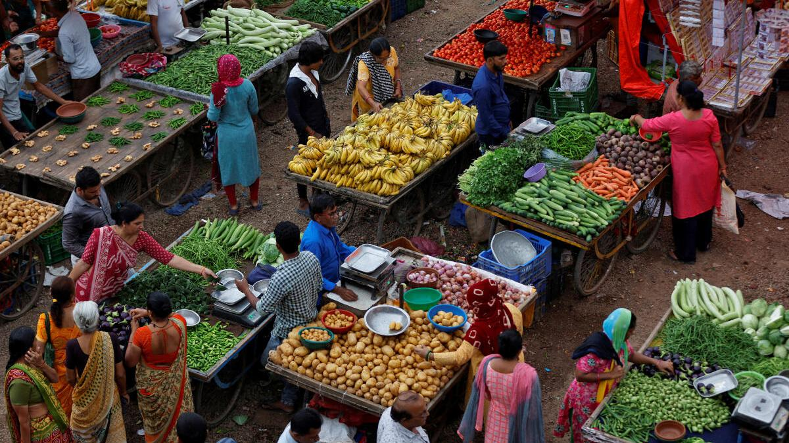
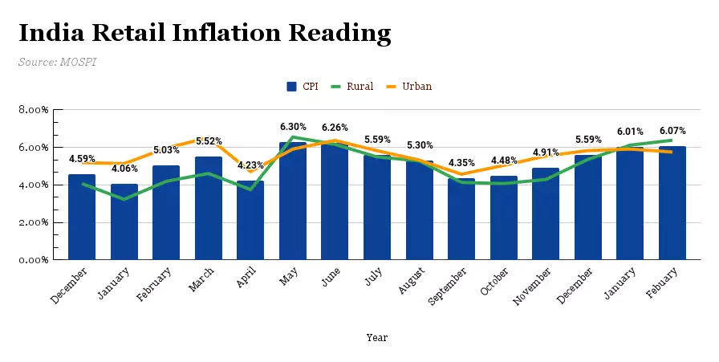

Home
Science & Technology
News
Economic
Information
Economic Express
Year in Review | How India’s economic indicators fared in 2023

The year was marked by significant global events like the U.S. hitting its debt ceiling in January, huge bank failures such as the collapse of Silicon Valley Bank in March, and the ongoing Israel-Hamas war. On the domestic front, there were stories about soaring tomato prices and six Assembly elections. Those elections and the upcoming Lok Sabha elections in 2024 will be observed keenly by investors for change in government economic policies and reforms.
India’s GDP growth
Quarterly estimates of the percentage change in GDP over the values of the previous year
India's gross domestic product grew by 7.6% in the second quarter of FY24 compared to 6.2% growth in Q2 FY23
 Although the second quarter’s growth of 7.6% was lower than that of the first quarter’s 7.8%, it was still well over the central bank’s prediction of 6.5%. Overall, India’s GDP has grown at a reasonably impressive pace and India remains the fifth largest economy in the world behind Japan and ahead of the United Kingdom.
Although the second quarter’s growth of 7.6% was lower than that of the first quarter’s 7.8%, it was still well over the central bank’s prediction of 6.5%. Overall, India’s GDP has grown at a reasonably impressive pace and India remains the fifth largest economy in the world behind Japan and ahead of the United Kingdom.
India’s retail inflation rate
After the inflation rate in October 2023 eased to a four-month low at 4.87%, the consumer prices surged by 5.55% in November 2023. In 2023, the inflation rate was the highest in July at 7.44%, the second-highest inflation rate since November 2021, with April 2022 recording an inflation rate of 7.79%.
Consumer prices of food and beverages surged by 8.02% in November 2023, after they had eased to a four-month low of 6.24% in October. Among these items, the major drivers were cereals, fruits, vegetables, pulses, and spices - all of them surging over 10% with the latter two surpassing the 20% mark as well. Among food and beverages, oils & fats were the only component that recorded a decline in prices by around 15%.
Monthly Retail Inflation based on Consumer Price Index-Combined
(Base 2012) (Y-o-Y) (%)

Clothing, housing, and fuel prices, all saw their lowest inflation rates of 2023 in November. While clothing & footwear recorded an inflation rate of 3.9% in November 2023, as compared to the 9.1% inflation rate in January 2023, housing inflation rates eased to 3.55%, and fuel & light prices continued to decline over the prices last year by 0.77%, thereby continuing its trend from September and October.
For the January to March 2024 period, inflation is expected to average 5.2%.
India’s Manufacturing PMI
Standard & Poor’s Manufacturing Purchasing Managers’ Index (PMI) is a weighted average of indices constituting new orders, output, employment, suppliers’ delivery times, and stocks of purchases. It indicates the overall health of the economy and its key economic drivers as exports, capacity utilisation, employment and inventories, among other things.
Throughout 2023, India’s manufacturing PMI remained above 50, signalling an expanding output, with the PMI hitting 56 in November. However, in October, growth eased to the slowest pace since February with the uptick in new orders hitting a one-year low, as the Global India Manufacturing PMI slipped to 55.5 from 57.6 in September.
India's Manufacturing Purchasing Managers' Index (PMI)
The PMI, is an economic indicator. It moves around a neutral level of 50, which indicates no change on the prior month. Readings above 50 signals that the economy is expanding and below 50 it is contracting – this allows one to see the economic cycle over time.

Indian rupee

Increases in the U.S. Federal interest rates have hindered the rupee’s growth against the dollar. In March this year, the rates were increased by 25 basis points. Such an increase makes investing in American assets less risky, leading investors to move to the dollar from the rupee. However, the Reserve Bank of India has been keeping a tight handle to limit fluctuations. Central banks play an important role in selling and buying foreign reserves to control the value of the domestic currency against that of the dollar.
Unemployment rate

According to figures from the Periodic Labour Force Survey, urban unemployment has come down from 7.2% in July-September, 2022 to 6.6% in July–September 2023. The worker population ratio, percentage of employed persons in the population, in urban areas increased from 44.5% in July-September, 2022 to 46% in July-September, 2023 for persons of age 15 years and above. The LFPR in urban areas, according to the latest report, increased from 47.9% in July-September, 2022 to 49.3% in July–September, 2023 for persons of age 15 years and above. The LFPR is the percentage of people working or actively seeking work.
Repo rate
The repo rate is the interest rate at which the RBI lends to commercial banks. An increase in the repo rate means loans become more expensive for the people. The repo rate has remained unchanged since February this year at 6.5%. This is expected to be maintained till August next year.